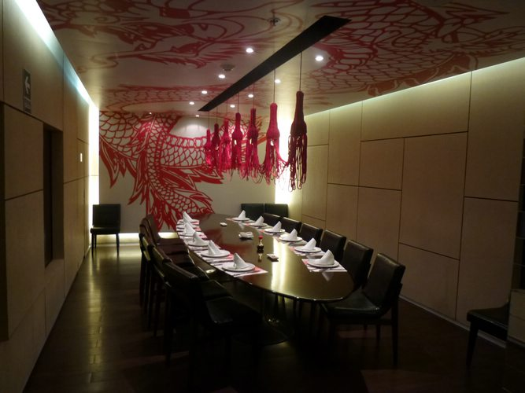
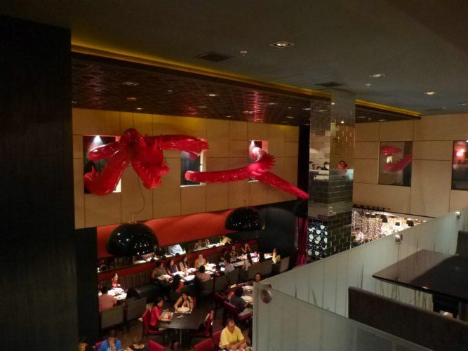

En Tierra Roja Fusion, nos especializamos en llevarte lo mejor de dos mundos culinarios que, aunque de orígenes distantes, comparten una profunda pasión por los sabores intensos y la frescura de sus ingredientes: la cocina china y la peruana. ¿Cómo nació esta idea? A través de la exploración y el respeto por ambas tradiciones culinarias, encontramos una mezcla perfecta entre las especias y los ingredientes únicos de China con la frescura y los ingredientes autóctonos de Perú.
La cocina peruana es famosa por su diversidad de sabores y la increíble variedad de productos frescos, como el ají, las hierbas frescas y el maíz. Por otro lado, la comida china destaca por su técnica, su equilibrio entre lo dulce, lo salado y lo picante, y la habilidad para transformar ingredientes simples en platos exquisitos.
Combinamos estos dos estilos para crear una experiencia única. Imagina un arroz chaufa fusionado con lomo saltado, o un tallarín saltado con toques de soja y jengibre. ¡Una fusión que no solo es deliciosa, sino que despierta todos los sentidos!
Al visitar nuestro restaurante, no solo experimentarás una comida, sino una auténtica travesía gastronómica que te llevará a un viaje por dos culturas ricas en historia y tradición. Nos enorgullece ofrecerte platos elaborados con los ingredientes más frescos, combinados de formas innovadoras para brindarte sabores inigualables.
Cada plato que servimos está pensado para ser una obra maestra, con un equilibrio perfecto de texturas, sabores y colores. Nuestra misión es sorprenderte con cada bocado, mientras te sumerges en un ambiente acogedor y lleno de calidez. Nos comprometemos a ofrecerte una experiencia culinaria completa, que va más allá de la comida: es un deleite para la vista, el olfato y, por supuesto, el gusto.
Si aún no has probado esta deliciosa mezcla de culturas, te invitamos a que lo hagas. En Tierra Roja Fusion, cada plato es una invitación a conocer la magia de la fusión de estos dos mundos. ¡Ven y vive la experiencia de la comida que trasciende fronteras!